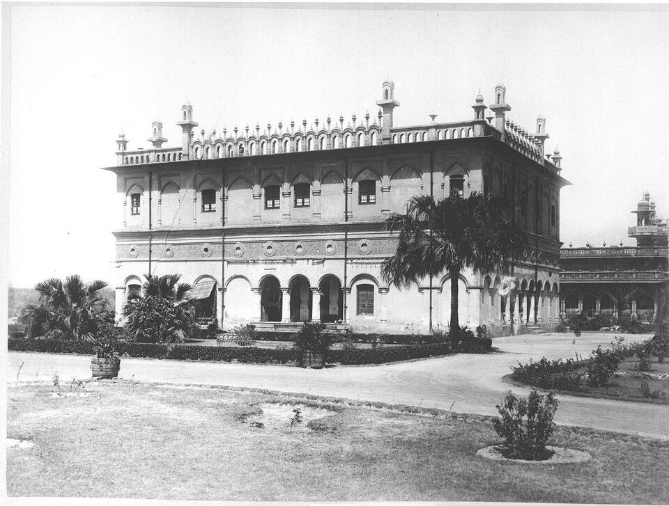

इतालवी नेता के विवादित बयान और वीडियो हटाने की मांग पर सुप्रीम कोर्ट में सुनवाई आज
सुप्रीम कोर्ट शुक्रवार को इतालवी नेता जियोकोमो फिलिबेक द्वारा हैदराबाद में दिए गए विवादित बयान और सोशल मीडिया से वीडियो हटाने की मांग वाली याचिका पर सुनवाई करेगा।

सुप्रीम कोर्ट शुक्रवार को इटली के नेता जियोकोमो फिलिबेक के 'वोट चोर, गद्दी छोड़' नारा लगाने के मामले में सुनवाई करेगा। याचिका में सोशल मीडिया से इस वीडियो को हटाने और हैदराबाद में हुई कांग्रेस की भारत समिट में शामिल विदेशी प्रतिनिधियों के वीजा की जांच के लिए एसआईटी गठित करने की मांग की गई है।
हैदराबाद में 13 और 14 नवंबर को आयोजित कांग्रेस की भारत समिट में 70 देशों के प्रतिनिधियों ने हिस्सा लिया था। यूरोपीय सोशलिस्ट पार्टी के महासचिव फिलिबेक ने 14 नवंबर को अपने संबोधन के दौरान यह नारा लगाया था और राहुल गांधी के अभियान का समर्थन किया था। इस दौरान मंच पर राहुल गांधी की मौजूदगी और उनकी प्रतिक्रिया को लेकर राजनीतिक दलों के बीच तीखी प्रतिक्रिया देखने को मिली थी।
केंद्रीय मंत्रियों और भाजपा नेताओं ने इस घटना पर कड़ी आपत्ति जताते हुए कांग्रेस पार्टी और राहुल गांधी पर निशाना साधा था। भाजपा का आरोप है कि विदेशी मंचों या प्रतिनिधियों के माध्यम से देश के आंतरिक राजनीतिक मुद्दों को उठाया जा रहा है, जिससे भारत की छवि प्रभावित होती है।
और पढ़ें
 राष्ट्रीय
राष्ट्रीयवाराणसी के नमो घाट पर 'भजन क्लबिंग' का आयोजन, पीएम मोदी ने की युवाओं के उत्साह की सराहना
वाराणसी के नमो घाट पर चार दिवसीय गंगा महोत्सव के दौरान 'भजन क्लबिंग' का आयोजन किया गया। आधुनिक बीट्स पर पारंपरिक भजनों के इस कार्यक्रम में युवाओं ने भारी उत्साह दिखाया, जिसकी प्रधानमंत्री नरेंद्र मोदी ने सराहना की है।
 राष्ट्रीय
राष्ट्रीयअमरनाथ यात्रा मार्ग का 85 प्रतिशत हिस्सा भूस्खलन के प्रति संवेदनशील, शोध में खुलासा
नेशनल इंस्टिट्यूट ऑफ़ हाइड्रोलॉजी के अध्ययन के मुताबिक अमरनाथ यात्रा का 85 प्रतिशत मार्ग भूस्खलन के लिहाज से संवेदनशील है। शोधकर्ताओं ने बड़े हादसों से बचने के लिए सुरक्षा पुख्ता करने की सिफारिश की है।

राष्ट्रीयउत्तर प्रदेश शिक्षा सेवा चयन आयोग ने स्पेशल TET का रिजल्ट किया घोषित
उत्तर प्रदेश शिक्षा सेवा चयन आयोग ने विशेष शिक्षक पात्रता परीक्षा (स्पेशल टीईटी) का परिणाम जारी कर दिया है, जिसमें प्राथमिक स्तर पर 15,159 और उच्च प्राथमिक स्तर पर 23,743 अभ्यर्थी सफल हुए हैं।
 राष्ट्रीय
राष्ट्रीयप्रधानमंत्री नरेंद्र मोदी आज तीन राज्यों के दौरे पर, बंगाल, बिहार और यूपी को मिलेगी सौगात
प्रधानमंत्री नरेंद्र मोदी शनिवार को पश्चिम बंगाल, बिहार और उत्तर प्रदेश का दौरा करेंगे। इस दौरान वह आईआईटी खड़गपुर के समारोह में शामिल होने के साथ ही बिहार में हजारों करोड़ की विकास परियोजनाओं की आधारशिला रखेंगे और लखनऊ में दीक्षांत समारोह में हिस्सा लेंगे।